Warframe
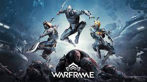Es un juego en línea multijugador de disparos en tercera persona de acción y rol gratuito desarrollado y publicado por Digital Extremes. Lanzado por primera vez para computadoras personales con Windows en marzo de 2013, luego se transfirió a PlayStation 4 en noviembre de 2013, Xbox One en septiembre de 2014, Nintendo Switch en noviembre de 2018, PlayStation 5 en noviembre de 2020 y Xbox Series X/S en abril de 2021, para el juego multiplataforma y el guardado cruzado, así como los puertos para dispositivos móviles, están planeados para 2022. El juego está en una versión beta abierta perpetua.
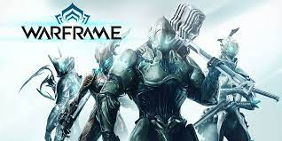En Warframe,los jugadores controlan a los miembros de Tenno, una raza de antiguos guerreros que han despertado de siglos de animación suspendida en el futuro de la Tierra para encontrarse en guerra en el sistema planetario con diferentes facciones. Los Tenno usan sus Warframes potenciados junto con una variedad de armas y habilidades para completar misiones. Si bien muchas de las misiones del juego usan niveles generados por procedimientos, también incluye grandes áreas de mundo abierto similares a otros juegos masivos multijugador en línea , así como algunas misiones específicas de la historia con un diseño de nivel fijo. El juego incluye elementos de juegos de disparos y cuerpo a cuerpo, parkour y juegos de rol para permitir a los jugadores avanzar en su Tenno con equipo mejorado. El juego incluye elementos de jugador contra entorno y jugador contra jugador. Es compatible con microtransacciones, lo que permite a los jugadores comprar artículos en el juego con dinero real, pero también ofrece la opción de ganarlos sin costo a través de la molienda.
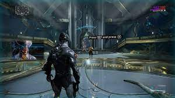Super People
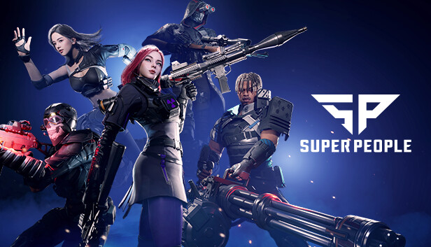Es un juego de batalla real desarrollado por el estudio surcoreano Wonder People y publicado por Wonder Games. Dirigido por Seong Gon Park, el título debut ganó gran popularidad en Steam, con 4,3 millones de jugadores participando en su prueba beta cerrada en febrero de 2022. Una final cerrada La prueba beta del juego concluyó el 30 de agosto de 2022
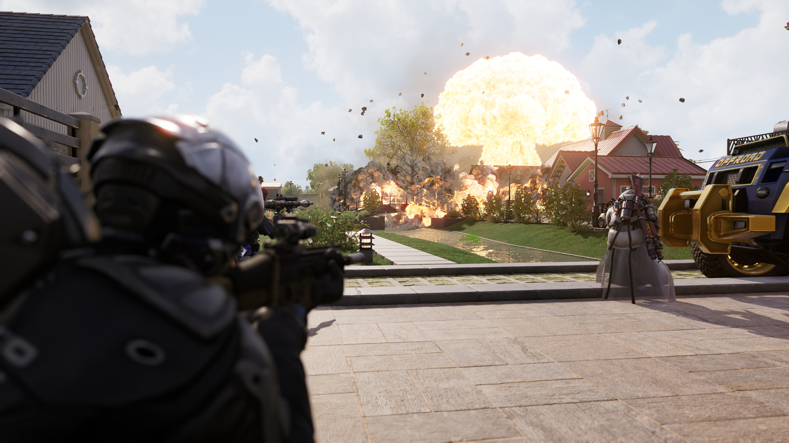Super People es un juego de disparos basado en clases de jugador contra jugador ,ambientado en la isla ficticia de Orb Island. Similar en el juego a los títulos de Battle Royale PUBG: Battlegrounds o Fortnite, los jugadores se lanzan en paracaídas en el mapa con suministros limitados para participar en un combate a muerte a gran escala, estilo eliminación , hasta que queda un jugador o un equipo. Una vez en el suelo, los jugadores pueden fabricar o buscar armas y equipos, que pueden diferir en tipo y calidad. Los jugadores tienen la opción de alternar libremente entre primera y tercera persona.puntos de vista
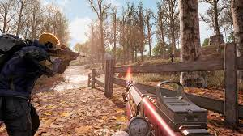COD: Warzone 2.0
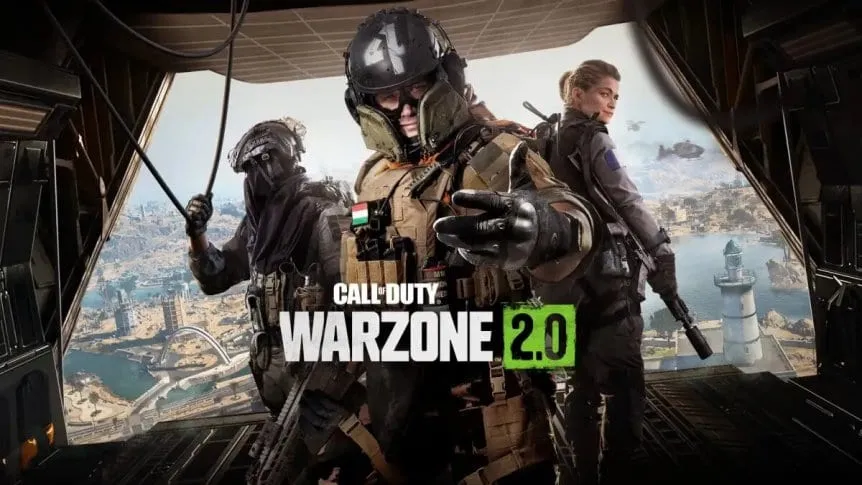Es un videojuego de Battle Royale gratuito para PlayStation 4, PlayStation 5, Windows, Xbox One y Xbox Series X/S . Es una secuela de Call of Duty: Warzone de 2020. El juego es parte de Call of Duty: Modern Warfare II de 2022, pero no requiere la compra del título mencionado anteriormente. Se introdujo durante la Temporada 1 del contenido de Modern Warfare II. El juego presenta un juego multiplataforma y un nuevo modo de extracción titulado DMZ.
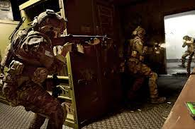Al igual que su predecesor, en el modo de juego principal de Warzone 2.0 , Battle Royale , los jugadores compiten en un mapa que se reduce continuamente para ser el último jugador que queda. Los jugadores se lanzan en paracaídas sobre un gran mapa de juego, donde se encuentran con otros jugadores. A medida que avanza el juego y se eliminan jugadores, el área jugable se reduce, obligando a los jugadores restantes a espacios más reducidos. Una nueva función en Warzone 2.0 , Circle Collapse, permite que se generen múltiples círculos dentro del mapa, que se cierran de forma independiente antes de converger en una única zona segura. Al igual que el primer Warzone, al morir, los jugadores son enviados al "Gulag", una arena de tamaño pequeño donde los jugadores muertos luchan entre sí para tener la oportunidad de reaparecer en el mapa. EnWarzone 2.0 , los partidos de Gulag están en formato 2v2 y, a veces, pueden incluir un combatiente de IA llamado "el carcelero", a quien los jugadores pueden cazar para adquirir una llave y escapar, además del método tradicional de ganar partidos de Gulag . Las monedas en efectivo en el juego también regresan, lo que permite a los jugadores comprar varios artículos en varias estaciones de compra repartidas por el mapa, incluidas cargas personalizadas con armas personalizadas y configuraciones de beneficios.
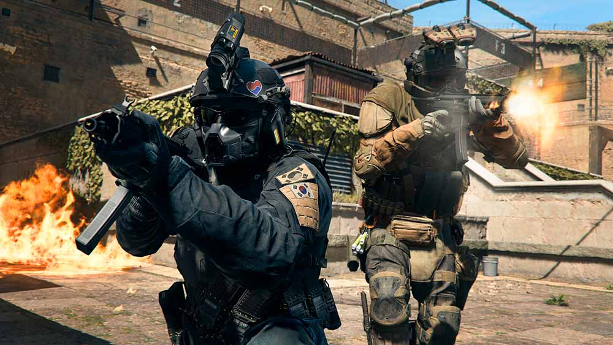Omega Strikers
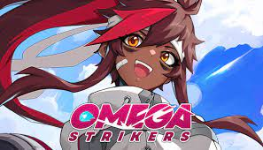Es un videojuego de acción y estrategia de 2022, desarrollado y publicado por Odyssey Interactive. El juego presenta partidas multijugador en línea cortas de tres contra tres, en las que los jugadores compiten para marcar más goles que el equipo contrario. A partir de septiembre de 2022, Omega Strikers está disponible en Windows como una versión beta abierta , con versiones de Android e iOS planeadas para lanzarse en 2022, y lanzamientos de consolas domésticas programados para 2023.
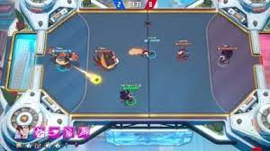Los partidos en Omega Strikers consisten en dos equipos de tres jugadores, que luchan para anotar enviando el Core, un gran disco de hockey , a la portería del oponente. El juego se presenta desde una perspectiva de arriba hacia abajo, con todo el campo de juego visible a la vez. Los jugadores pueden elegir entre un elenco de personajes, conocidos como Strikers. Cada Striker tiene un conjunto único de habilidades que se pueden usar para atacar a los jugadores enemigos, mover el núcleo, mejorar a tus aliados, debilitar a tus enemigos y más. Cuando un personaje recibe daño, su barra de escalonamiento aumenta, lo que facilita que sus oponentes lo derriben, o incluso lo saquen del campo por completo durante un breve período. A través de interacciones como marcar goles, noquear enemigos, hacer atajadas, etc., obtendrás puntos de experiencia que pueden potenciar a tus delanteros a lo largo del juego.
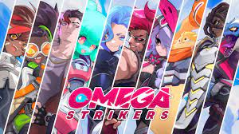Fangs
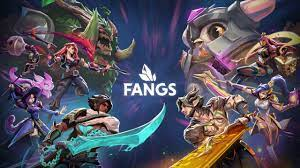Fangs es una reimplementación del juego de deducción social Shadow Hunters. Los jugadores reciben en secreto personajes que pertenecen a uno de tres equipos: vampiros, hombres lobo o humanos. Los vampiros y los hombres lobo ganan al destruir al otro equipo, mientras que los humanos generalmente simplemente intentan mantenerse con vida (aunque algunos personajes pueden terminar alineándose con uno de los otros dos equipos). Dado que todos comienzan a saber solo quiénes son, deben comenzar a trabajar para deducir quiénes son los otros jugadores y si son amigos o enemigos. Actuar rápidamente puede ayudarlo a obtener una ventaja al debilitar al equipo contrario antes de que se den cuenta de cuál de los jugadores que luchan es su aliado, pero moverse apresuradamente con información limitada puede hacer que elimine accidentalmente a un compañero de equipo y vuelva a colocar su lado en el conflicto. En cada turno, los jugadores intentan recopilar información, encontrar nuevos equipos o intentar dañar (o ayudar) a otro jugador. Las diferentes áreas del mapa influyen en lo que puedes descubrir y con quién puedes interactuar, mientras que ciertas cartas y habilidades significan que nunca puedes estar seguro de que las cosas saldrán según lo planeado.
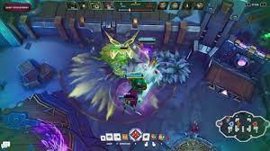